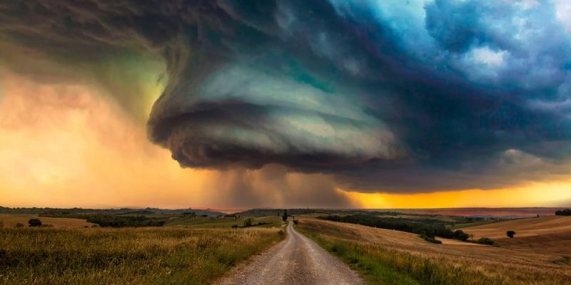
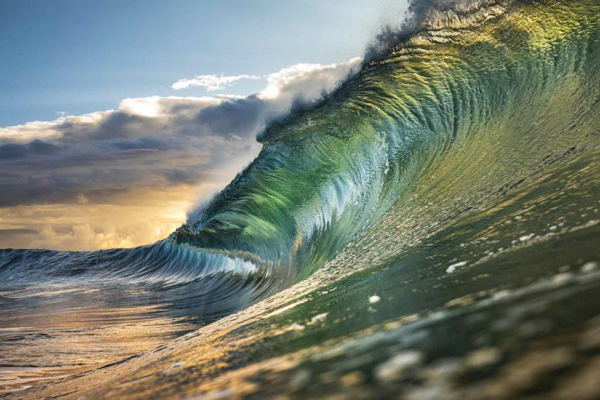

Los tornados pueden ser de una gran variedad de colores, dependiendo del ambiente en el que se formen. Aquellos que se desarrollan en un entorno seco pueden ser prácticamente invisibles, apenas distinguibles sólo gracias a los desechos en circulación en la base del embudo. Los embudos de condensación que levantan pocos desechos o no los levantan pueden ser grises o blancos. Al viajar por encima de un cuerpo de agua, como lo hacen las trombas marinas, pueden volverse muy blancos o hasta azules. Los embudos que se mueven lentamente, consumiendo grandes cantidades de desechos y tierra, generalmente son más oscuros, tomando el color de los desechos. Por su parte, los tornados en las Grandes Llanuras pueden volverse rojos debido al tinte rojizo de la tierra, y los tornados en zonas montañosas pueden viajar sobre terrenos cubiertos de nieve, volviéndose de un blanco brillante.

Imagen 1.1: Tornado
Tsunami
Como se forma un Tsunami
La mayoría de los tsunamis son originados por terremotos de gran magnitud bajo la superficie acuática. Para que se origine un tsunami, el fondo marino debe ser movido de manera abrupta en sentido vertical, de modo que una gran masa de agua del océano sea impulsada fuera de su equilibrio normal.

Imagen 1.2: Tsunami
Terremotos
El Terremoto de mayor magnitud
El terremoto de mayor magnitud registrado en el mundo tuvo lugar en Valdivia, Chile, en 1960. Dejó al menos 2.000 muertos y dos millones de personas damnificadas.
El sismo de magnitud 9,5 provocó erupciones de volcanes y un maremoto que destruyó ciudades de la costa chilena hasta cruzar el océano Pacífico y causar víctimas en lugares tan lejanos como Japón, Hawái o Filipinas, a donde llegó más de 15 horas después.